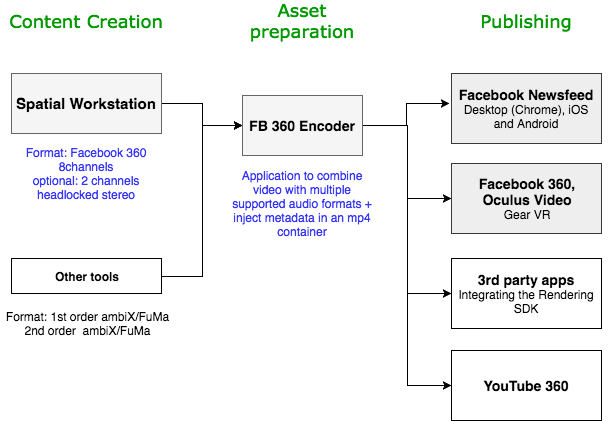
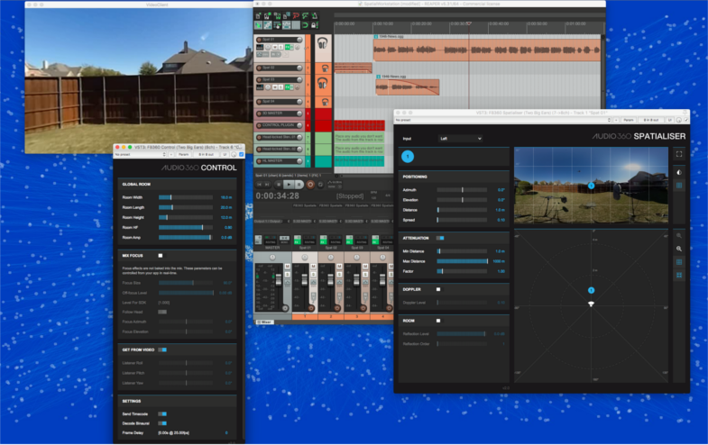
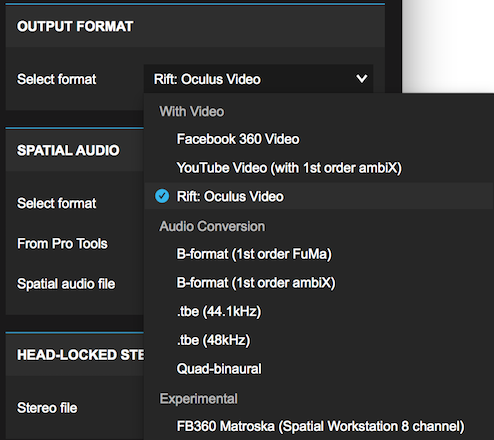

Spatial Workstation Workflow¶
The FB360 Spatial Workstation is an end-to-end pipeline that allows sound designers to drop in audio sources, position and sync to scene elements and render to a single spatial audio file that can be played back on Facebook, Oculus Video and other platforms. Originally developed by Two Big Ears, FB360 Spatial Workstation is now a free tool provided by the Audio 360 team at Facebook.
FB360 Spatial Workstation is a collection of plugins for DAWs that include a spatialiser, video player, encoder, and rendering SDK, just to name a few. These plugins help designers create spatial audio content, encode it with platform-specific metadata (for Facebook, YouTube, etc), and play it back in a client application.
The diagram above illustrates a typical end-to-end workflow focusing on sound design, asset preparation, multiplexing, a.k.a ‘muxing’ (combining audio and video) with final video and publishing to Facebook, Oculus or other supported apps.
If the application uses the Audio 360 Rendering SDK, the sound designer prepares a .tbe file, which is delivered separately. The Rendering SDK allows for the .tbe file to be played in sync with a video file.
On Facebook and YouTube, the Encoder application creates an upload-ready video file.
Content Creation¶
The Spatial Workstation is a collection of DAW plugins that allow the sound designer to create an interactive spatial mix for 360 videos.
- Spatialiser plugin: This allows the sound designer to place a sound source in space. The source itself could be a mono source, an ambisonics recording, or a multi-channel source such as a surround reverb. Non-mono sources act as a ‘bed’ while diegetic mono sources, such as dialogue and sound effects, are usually placed in a scene. Non-diegetic audio such as narration or background music is usually routed to the head-locked stereo bus. This makes it part of the final mix but not relative to head orientation.
- Control plugin: This plugin acts as the command centre, controlling how all audio is routed for real-time binaural playback over headphones. This plugin also manages global settings of features such as early reflections and mix focus.
- Video player: Spatial Workstation includes a 360 video player that is ‘slaved’ to the DAW timeline, and allows the sound designer to preview the mix with the 360 video in real time, either in VR or on the desktop. Desktop mode allows rotating the video with the keyboard or mouse, which will rotate the sound field instantly, providing direct feedback during the authoring stage.
- Converter plugin: Utility plugin offering the option to rotate a mix after it has been created, or output to other formats such as 4-channel ambiX.
- Loudness meter: Provides an overview of the loudness of the entire mix. Loudness for spatial mixes is considerably different than what is offered inside DAWs, which is usually for static content. Spatial audio for 360 videos is considerably more complex and this meter gives useful data that will prevent the final uploaded content from distorting when played back on the target device.
Encoding and Asset Preparation¶
The FB360 Encoder application, takes a video file and combines the audio files into the video container, suitable for playback on Facebook and other supported platforms. Additionally, it also allows adding metadata to the file describing values for the Focus feature.
This process also injects relevant metadata into the tool, making the final asset ready for upload to supported platforms.
Supported Platforms for Playback¶
- Facebook 360 Video format (8 or 10 channel audio): Facebook newsfeed, Oculus video on Gear VR
- .tbe format: Apps with Rendering SDK
- YouTube 360
- Other platforms with support for ambisonics or quad-binaural format. Note that these platforms have specific instructions for preparing assets.